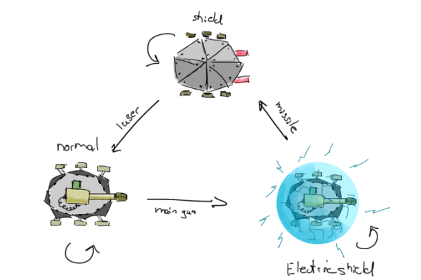
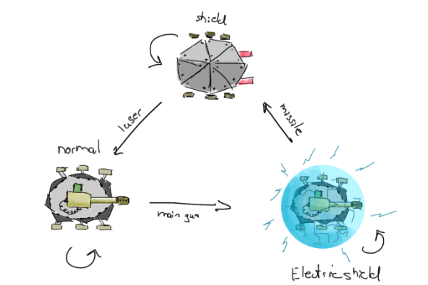

Level Design
Designed the Onboarding (Level 1-4) and Level 6 & 7. I designed the Levels by a Moment to Moment approach. However, due to the open level design I had learn creating Moments that are always interesting now matter from which direction you would aproach them.
To keep the Pathfinding Core Dynamic we had to find a way to limit the player’s movement while also giving enough interesting choices. As a result, we created the rail-based movement and built the whole game around it. The player must respond quickly and keep an eye out for a path while being under fire. We initially planned to introduce a rock-paper-scissor combat system to counter enemies, but due to higher pace of the game we instead focused on the shield and tying that into movement and shooting.
 


Challenges
Deadlines
The biggest challenge during this project were the deadlines. On each of the two deadlines, 50% of the Y1 projects got cut and reassigned to other teams.Greenlight Pitch
The first challenge was the lack of programming power when our only programmer got ill before the Greenlight Pitch. However, we got together as a team and decided to make a video of a paper prototype instead of a UE4 Prototype as an emergency solution. were able to use the time left to create an effective pitch and Art Mockups which got the project greenlit.First Deliverable
After getting greenlit we face another challenge, we only had two weeks to create a playable prototype starting with very little. Thanks to the additional 3 members we got a clear vision we created a playable prototype with a solid core loop that got approved and complimented by the teachers.Planning Overview from inital pitch including the internal and external Deadlines.
Lessons Learned
What to keep doing?
- During the project, I learned the importance to make your clients feel listened to. They feel more involved in the project and give better feedback as well. Even if something might not be clear from the beginning ask and find the golden nuggets of advice they want to give.
- Even if a very challenging situation occurs it is important to focus on the things you can still change and make them even better.
- Making Backup Builds before the actual Deadlines to reduce stress on the actual deadline.
What to do better?
- Got Feedback from Jason van den Bergh (Creative Director of For Honor) that instead of creating a Game and then the tutorial. We should just create the tutorial as the game. Teaching the game along the way. While we addressed this Feedback before release I still want to keep this in mind for future projects.
- Close to critical deadlines, I need to be stricter about what goes into the build. Not matter if I'm doing Production or Design.